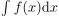
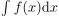
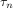
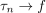
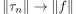
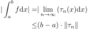

Lipschitzstetigkeit des Integrals
1. Satz
Sei  eine beschränkte, treppenapproximierbare Funktion, so folgt, dass  Lipschitzstetig ist
eine beschränkte, treppenapproximierbare Funktion, so folgt, dass  Lipschitzstetig ist
2. Beweis
Es existiert eine Funktionenfolge von Treppenfunktion , so dass  gleichmäßig konvergiert. Damit gilt auch 

1